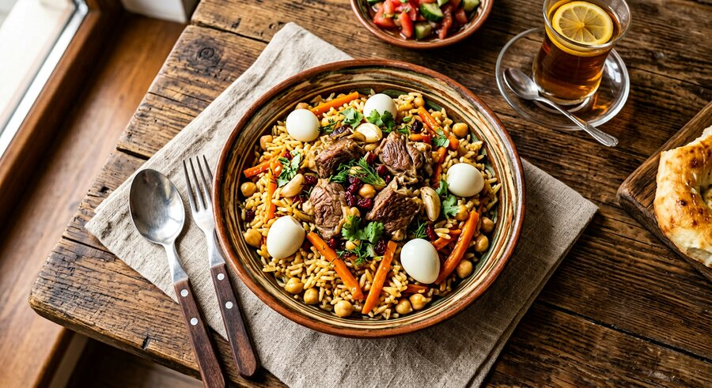
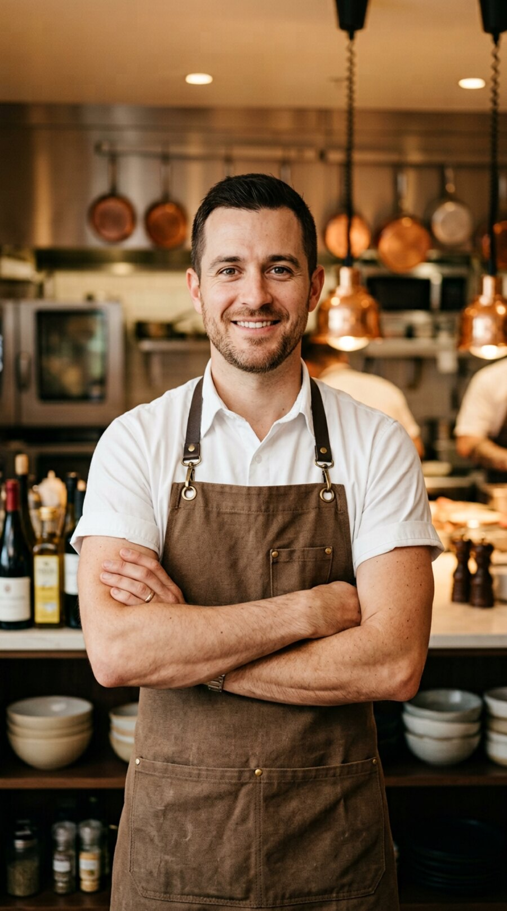
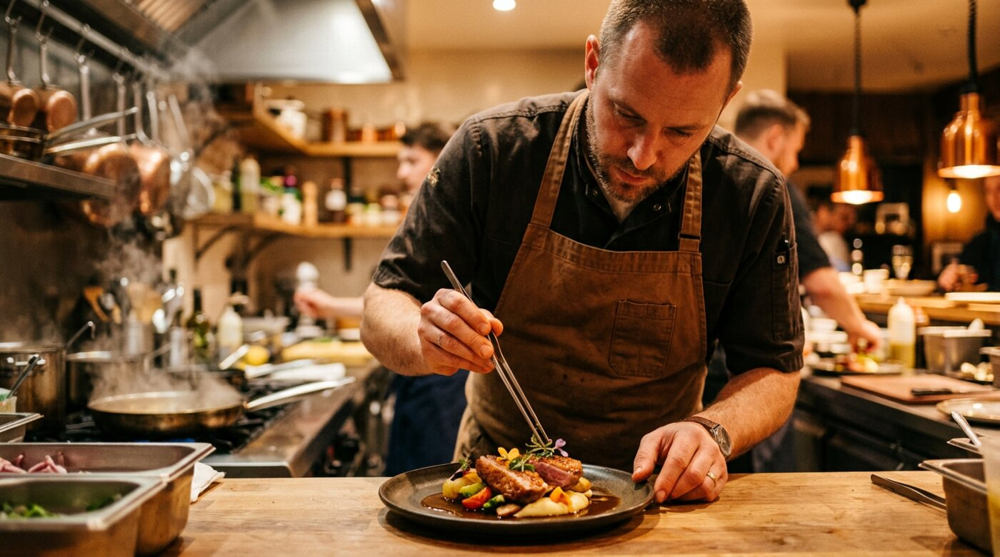
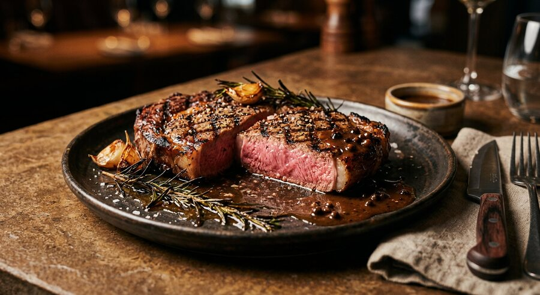
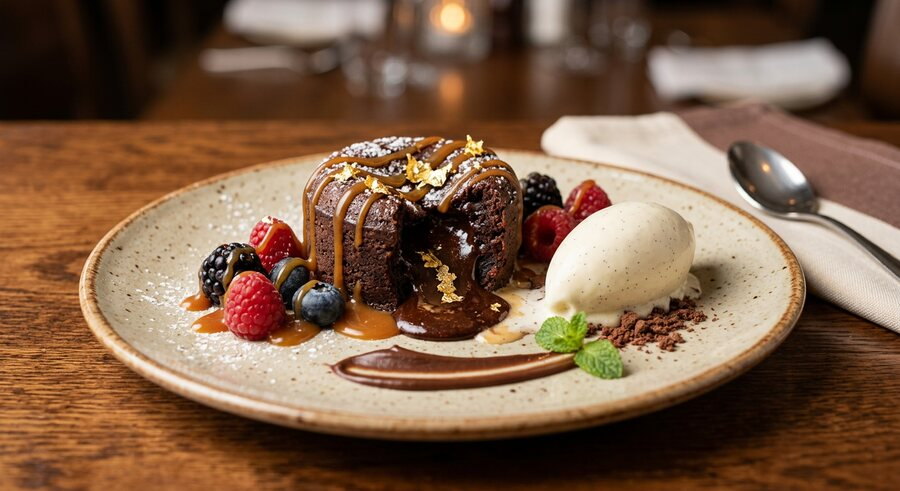
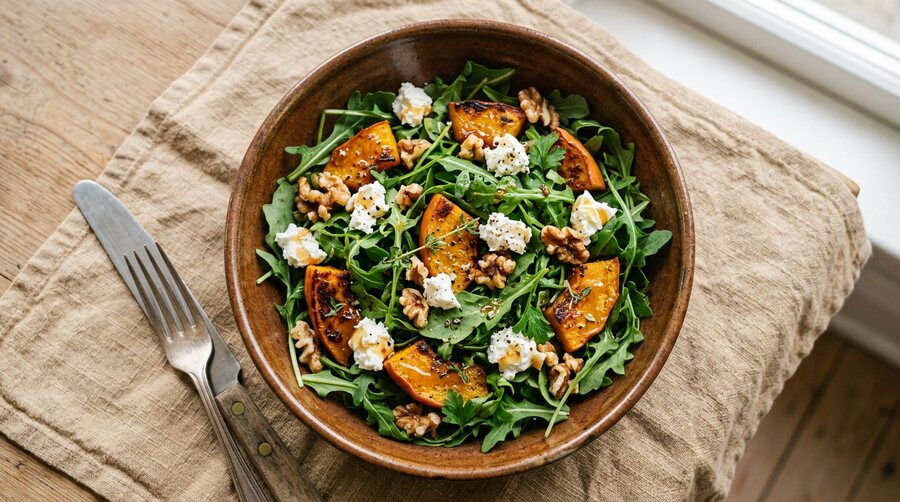
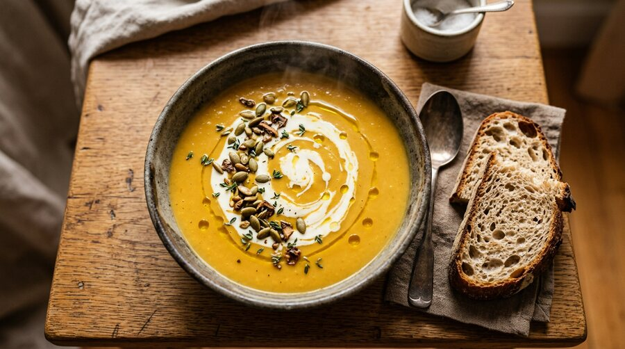
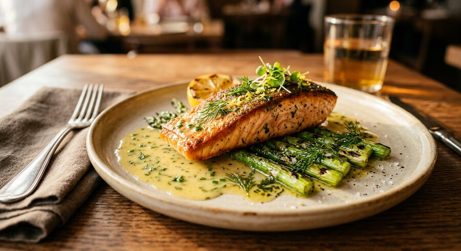

MilliyToshkent palovi
Dumba, sariq sabzi va ziravorlar uyg'unligi — toshkentcha an'anaviy usulda.
12 yildan ortiq vaqt davomida o'zbek va Yevropa oshxonasida ishlayman. Oddiy mahsulotlardan unutilmas ta'm yasash — mening ishim va ishtiyoqim.

Oshxonada o'tkazgan har bir kunim men o'rgangan narsamning bir qismi: mahsulotni hurmat qilish, vaqtni to'g'ri his qilish va har bir taomga o'z hikoyasini berish.

Men Toshkentdagi pazandachilik akademiyasini tamomlaganman va o'z yo'limni kichik oshxonada yordamchi sifatida boshlaganman. Bugun men bosh oshpaz sifatida jamoani boshqaraman, mavsumiy menyular yarataman va yosh oshpazlarga o'rgataman.
Mening uslubim — klassik texnika va mahalliy mahsulotlarning uyg'unligi. Men har bir retseptni mahalliy fermerlarning mahsulotlariga moslashtiraman, shuning uchun taomlar yangi, mavsumiy va takrorlanmas bo'lib chiqadi.
Har bir taom — mavsum, mahsulot va mijoz istagining natijasi. Kattaroq ko'rish uchun rasmga bosing.

MilliyDumba, sariq sabzi va ziravorlar uyg'unligi — toshkentcha an'anaviy usulda.

Imzo taomKömürda pishirilgan, rozmarin va sarimsoqli sariyog' bilan suzilgan medium-rare steyk.

ShirinlikIchi suyuq shokolad, karamel sousi, yangi rezavorlar va vanilli muzqaymoq.

YengilQovurilgan qovoq, rukola, echki pishlog'i, yong'oq va asal sousi.

MavsumiyQaymoqli qovoq sho'rvasi, qovurilgan urug'lar, timyan va zaytun moyi.

Fine diningLimonli sariyog' sousi, grilda pishirilgan asparagus va ko'kat moyi.
Restoran ochishdan tortib uy sharoitidagi kechki ovqatgacha — har bir loyiha uchun mos yechim.
Kontseptsiyadan to'liq texnologik kartagacha: taom tanlash, food cost, taqdimot va plats.
Loyiha asosidaGuruhli yoki individual darslar: texnika, xavfsizlik, plats va oshxona tashkiloti.
3 soatdanTo'y, tug'ilgan kun va korporativ tadbirlar uchun to'liq menyu va xizmat ko'rsatish.
20–500 mehmonOshxona ish jarayonini optimallashtirish, jamoa tanlash va standartlar joriy etish.
Oylik / loyihaTaomni suratga olish uchun tayyorlash, kompozitsiya va vizual kontent strategiyasi.
KunlikUyda yoki dam olish joyida individual menyu: xarid, tayyorlash va taqdim etish.
SoatbayKichik oshxonadan bosh oshpaz lavozimigacha — har bir bosqich o'z saboqlarini berdi.
Restoran “Caravan Bib · Toshkent”
Mavsumiy menyu yaratish, 18 nafar xodimdan iborat oshxona jamoasini boshqarish, food cost ko'rsatkichini 8% ga yaxshilash.
“Osh Markazi” gastrobari
Yangi taomlarni sinovdan o'tkazish, xodimlarni o'qitish va smenalarni rejalashtirish bilan shug'ullanganman.
“Registon” restorani
Grill va pishiriq bo'limida ishlab, milliy taomlarni zamonaviy taqdimotda berish usulini o'zlashtirganman.
“Zarafshon” mehmonxonasi
Nonushta va banketlar bo'limida asosiy tayyorlash texnikasini o'rganganman.
Toshkent pazandachilik akademiyasi
“Oshpazlik texnologiyasi” yo'nalishi bo'yicha diplom, sanitariya va xavfsizlik sertifikati.
“Sardor bizning restoran menyusini noldan qayta ko'rib chiqdi. Uch oy ichida mijozlar oqimi sezilarli oshdi, jamoa esa aniq standart asosida ishlay boshladi.”
“To'yimiz uchun 240 kishilik menyuni tayyorladi. Har bir taom o'z vaqtida va ideal holatda berildi. Mehmonlar hali ham gapirib yurishadi!”
“Master-klassdan keyin oshxonamga qaytdim va uy taomlarim butunlay o'zgardi. Amaliy, tushunarli va juda samimiy o'rgatadi.”
Loyihangiz yoki tadbiringiz haqida yozing — 24 soat ichida javob beraman.